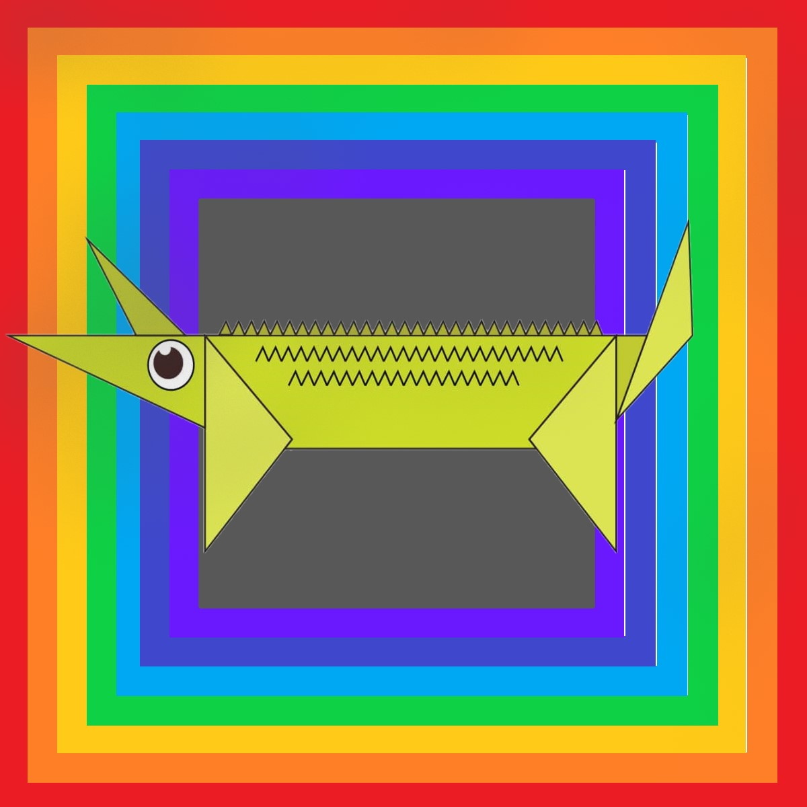
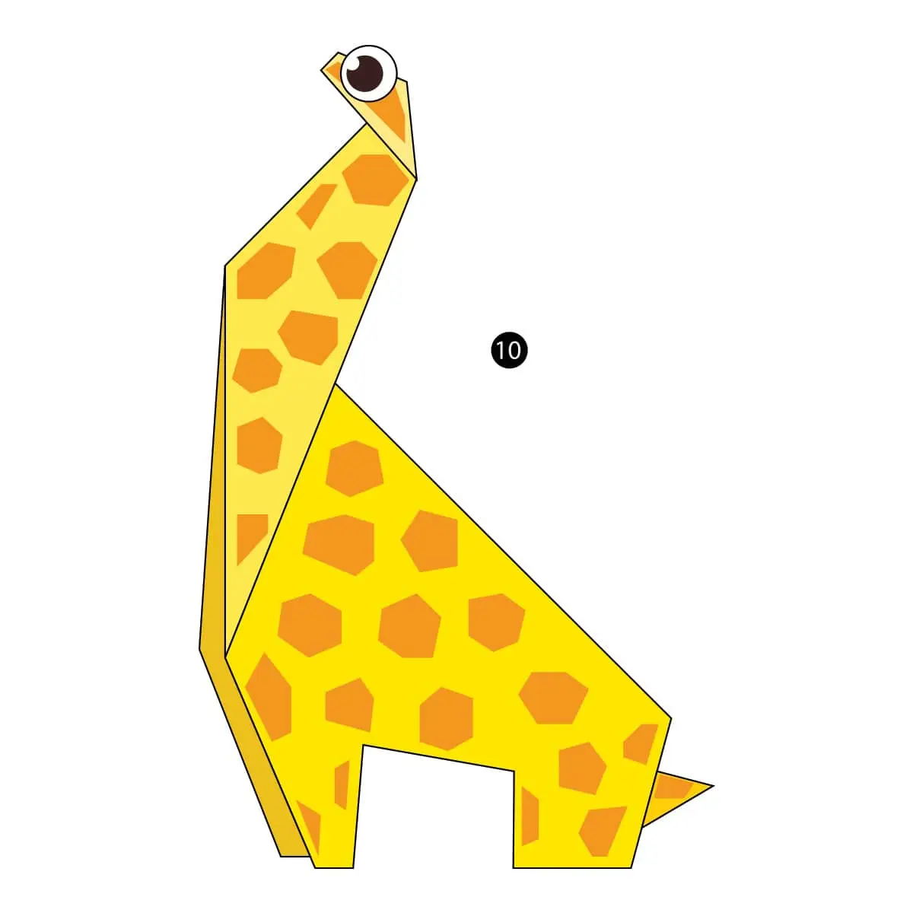

Here is some information about origami:
Origami is the most exciting and wonderful HandiCraft, because only paper is use, and all of us know that paper is a delicate material. Origami is done in many ways; using bluberry papers or crafting papers.But, there is also a different paper for origami, that is one sided color paper. Yes, those type of papers are origami papers. You might have seen delicate paper decorations like ribbons made of thin papers. Those papers are blueberry papers.
If you want to learn how to do origami like making animals , and look at more origami topics, click on those pics below which you want to make. It will take you to the website.
 